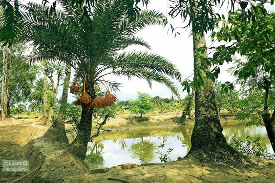
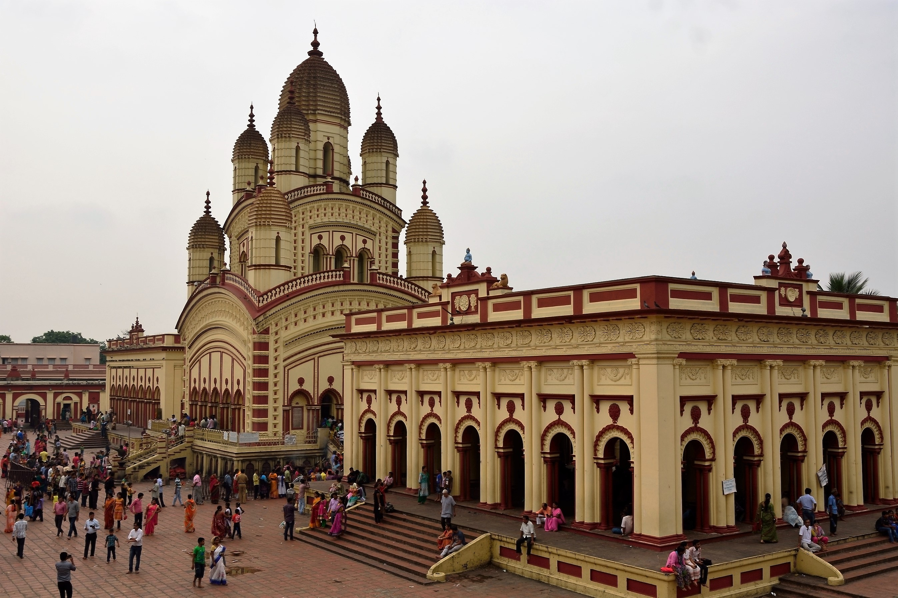

About South 24 Parganas
Like its northern counterpart, this district also shares cultural influences with Kolkata. The district is also home to various folk traditions and religious festivals.


Like its northern counterpart, this district also shares cultural influences with Kolkata. The district is also home to various folk traditions and religious festivals.